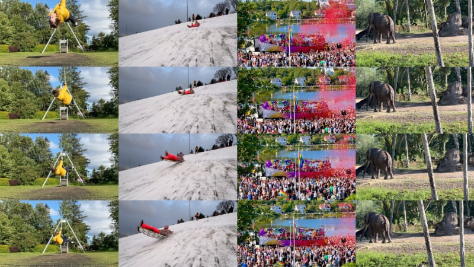
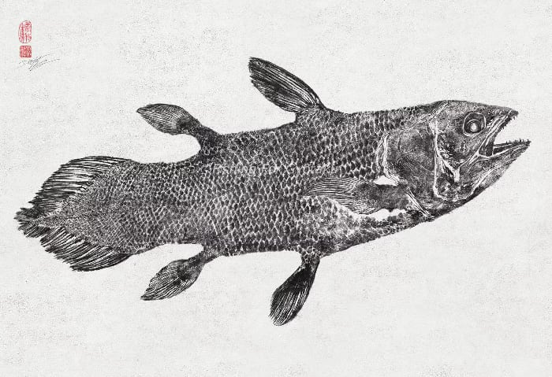
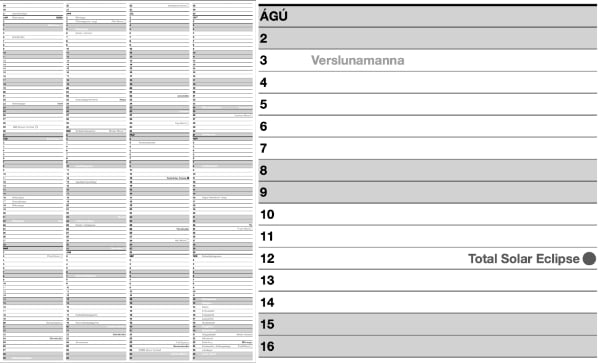

02025Q3 REYKJAVIK: It was a busy quarter, continuing our tradition of one prototype project for the summer months.
We ended Q3 with sad news of the passing of our dear friend and co-conspirator Aitor. We worked together on Analog.is, Sumendi and so many others. It will take time to steady the ship.
New Camera App: DejaView

We love the spark that comes from seeing something inspiring and diving in to try it ourselves.
Our most recent experiment is an iOS camera app that captures images from back in time to create a collage and animated GIF.
You can read more about the inspiration, process and technology on our website: https://optional.is/required/2025/07/31/dejaview-camera-app/
Download it on the Apple App Store:
https://apps.apple.com/us/app/dejaview/id1598005975?ls=1&mt=8
Gyotaku - Japanese Fish Printing

To record their catch, Japanese fishermen would clean, ink and press their fish onto washi paper. The practice dates back to the mid-01800s and continues today.
Project Progress
This quarter, we've been heads down on at least 6 different external projects. While they've been fun and rewarding, we can't disclose too many details. This is a big challenge: promote our work, show our expertise and set ourselves up to win the next project when the case studies are full of redactions!
Externally:
• Built a web & iOS prototype for ██████ using WebRTC.
• Responded to a ██ RFP to manage 1,000+ ███████████.
• Expanded software for █████████ in Australia to manage a new branch of their business.
• Requested to put a proposal together for pop-up events for ████.
• Pitched yet another idea for a new ██████████ game.
• Took the next step to productize PETALS.
Internally:
• Collaborated with friends on a new Calendar style app.
• Tinkered on our Time Tracking tool to connect with Icelandic invoicing software APIs.
• Strategized with some family members on a service for dog owners.
Michelangelo’s Snowman
One January morning 01494, Florence, Italy awoke covered in a blanket of snow. This was such an unusual event that Piero de Medici, probably the richest and most powerful man in Florence, commissioned a young 19 year-old artist to build him a snowman.
That artist was Michelangelo. Given his track record, it was probably the most beautiful snowman ever created, but we'll never know because it melted.
Q3 Writing
In Q3, we published 7 articles, 6 weeknotes and maintained our ◍ Quarternotes newsletter schedule.
Latency and the Sea
https://optional.is/required/2025/07/03/latency-and-the-sea/
⸻
Creative Tip Jars
https://optional.is/required/2025/07/17/creative-tip-jars/
⸻
DejaView Camera App
https://optional.is/required/2025/07/31/dejaview-camera-app/
⸻
Wii Music Hand Holding
https://optional.is/required/2025/08/15/wii-music-hand-holding/
⸻
LUT Cubes and Shaders
https://optional.is/required/2025/08/27/lut-cubes-and-shaders/
⸻
Integrating Clusters
https://optional.is/required/2025/09/12/integrating-clusters/
⸻
Discussion Receipts
https://optional.is/required/2025/09/26/discussion-receipts/
⸻
📰 optional.is/newsletter/
🗓 optional.is/required/category/weeknotes
📡 optional.is/feeds/
02026 A0 Annual Calendar

This will be our 10th year of creating large, A-series wall calendars. A PHP script generates SVG output, which we edit into a PDF for print. The calendar includes Icelandic holidays, old Icelandic months, Icelandic Yule Lads, full moons, equinoxes, solstices, a solar eclipse and more. Add your own holidays and translations!
We found a local print shop and printed these on their B&W architectural plotter on 80g paper.
Download the print-ready 02026 PDF and source code on GitHub:
https://github.com/optional-is/calendaring/blob/master/A0-Yearly/02026-Misseristal-A0.pdf
Merch
Adventure Mazes! You can now order paperback books of our mazes. Join our monthly maze mailing list and enjoy the side quests.
Print-ready A0 annual wall calendar PDF. An open-source project to download and print at a local print shop yourself. Stay 📦 organized and stay 🤪 sane.
Designing with Data eBooks. If you need to tell your story using data, pick up these books today. Now pay what you want for epub, mobi, pdf.
Prototypes to Products.
(optional.is) have worked with teams since 02011 to realize their ideas. From workshops to prototypes to products, we're there to help. Our experience working with small to enterprise companies brings a unique perspective on what's possible.
Contact us and say hello. 👋🏻